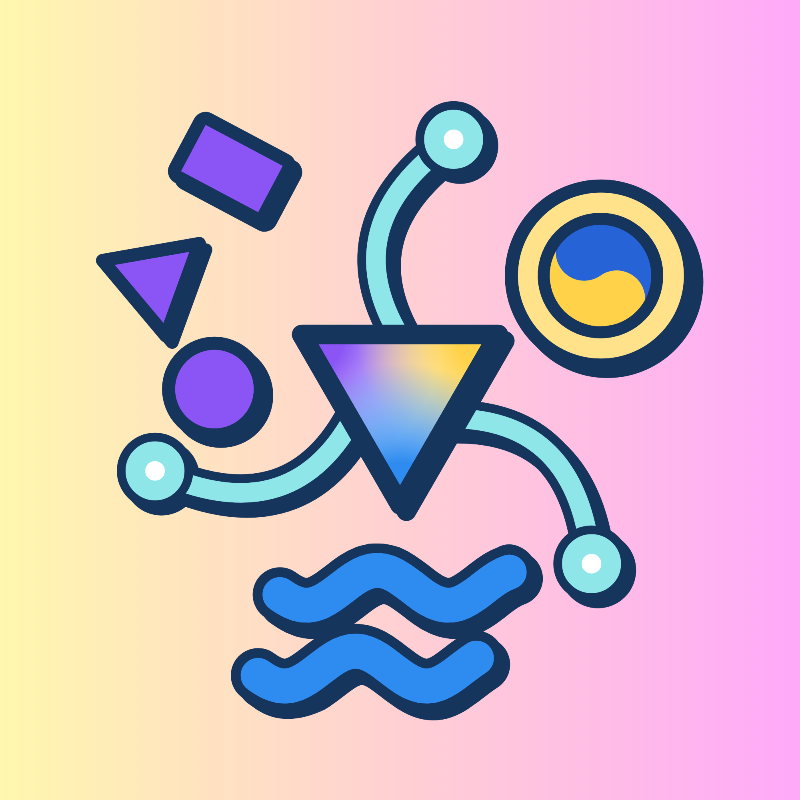
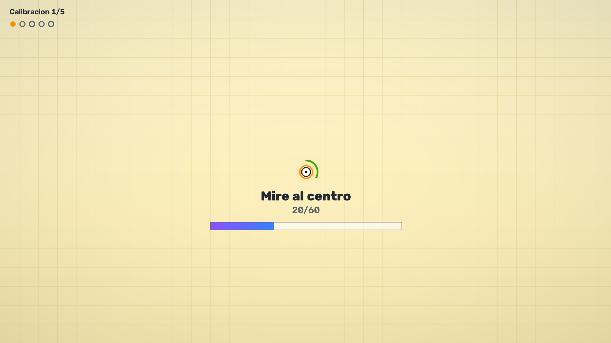
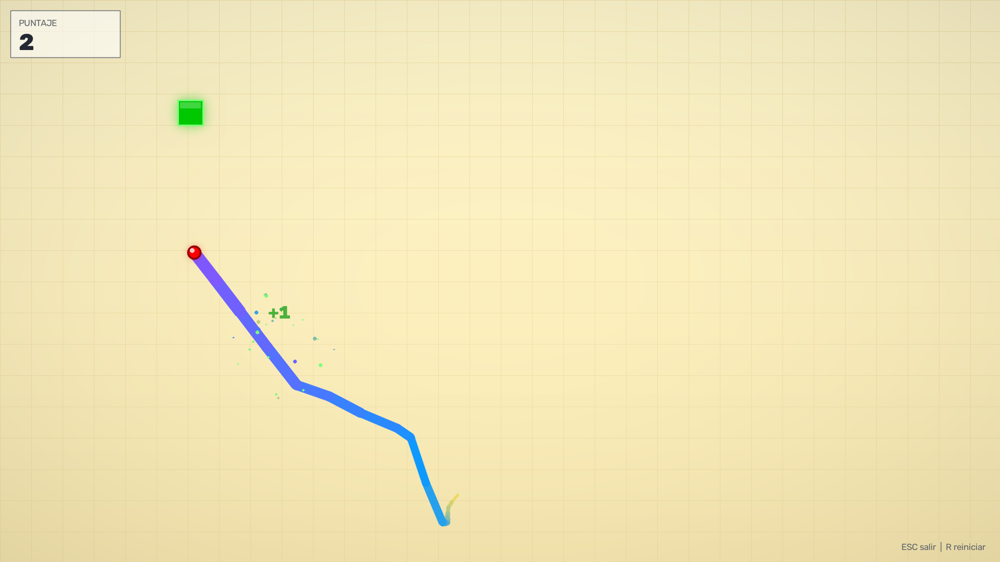
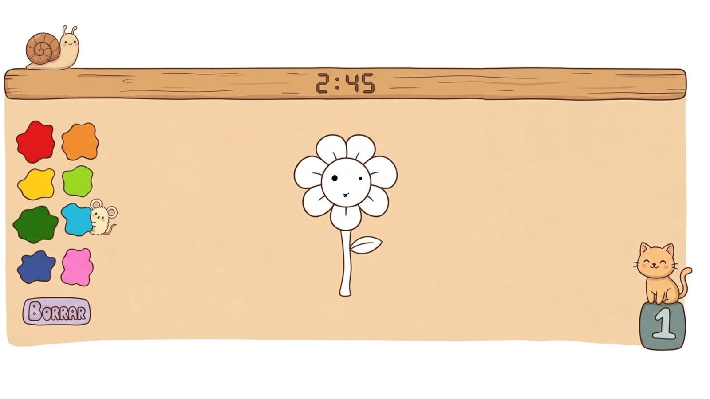

Tres librerías
MediaPipe
OpenCV
NumPy
Gaziris Nexus
Un motor que convierte el movimiento de los ojos en una forma de usar la computadora, pensado para chicos que no pueden manejar un mouse, un teclado o un lápiz.
Prototipo experimental en etapa de pruebas.

La discapacidad neuromotora limita la interacción de los chicos con su entorno, incluido el uso de computadoras, celulares y tabletas.
¿Qué pasaría si pudiera participar utilizando su mirada?
La regla del proyecto: solo el movimiento de los ojos. Nada de cabeza ni de cuerpo, porque muchos de los chicos a los que está dirigido no pueden moverse por sí solos.
Fuente: Bottinelli, L. (2024). La modalidad de educación especial en Argentina: características institucionales y evolución reciente de la oferta. Ministerio de Educación de la Nación. No se encontraron datos públicos y actualizados sobre la cantidad de chicos con discapacidad neuromotora en el país.
El proyecto empezó entre mayo y junio de 2026, sin conocimientos previos del lenguaje de programación ni de los conceptos necesarios.

Desarrollo individual · Alrededor de 150 horas realizadas
Como referencia se tomaron dos proyectos de código abierto desactualizados, cuya lógica se reestructuró para respetar la regla de usar solo los ojos.
Se usó inteligencia artificial de forma responsable: en la parte gráfica, como esta página, y como apoyo en pruebas y búsqueda de errores. Sus respuestas siempre se evaluaron y corrigieron.
El motor mueve un punto dentro de una ventana siguiendo la mirada. La calibración es lo que lo adapta a quien lo usa.
El puntero recorre toda la pantalla, pero todavía tiene ruido y funciona dentro de una ventana.
Depende de la iluminación, la distancia a la cámara y el equipo. Probado con cámara de 1080p y 8 GB de RAM.
Todavía no hubo pruebas con los destinatarios finales.
Funciona sin conexión a internet: las imágenes de la cámara nunca salen de la computadora.
En las pruebas realizadas, incluidas personas que usan anteojos, el programa respondió según lo previsto. La idea es mantener sesiones cortas; su duración la definirían docentes y familiares.
El motor es un punto que se mueve con la mirada. Lo valioso es lo que se puede construir encima.

El motor es la base; el juego muestra una de sus posibles aplicaciones.
Para quien no puede sostener un lápiz, dibujar con la mirada puede ser una forma de expresarse.
Elegir colores o deshacer requiere hacer clic con la mirada, algo que depende de un puntero más estable. La forma de activar estos controles todavía no está definida.

Como el motor ya existe, cada nueva aplicación es más rápida y menos costosa de desarrollar: con una sola base se construye todo un catálogo.
Aplicaciones descargables por suscripción, con una demo gratuita para probar antes de pagar.
Licencia para hasta cinco computadoras.
Pago mensual o anual.
Un plan para el hogar.
Con su propio alcance y precio.
Alcance inicial: Argentina, con cobros en pesos. Esta página es referencial generado por IA: no ofrece compras, licencias ni descargas comerciales.
El desarrollo requirió una inversión de aproximadamente $1.560.000, casi toda en horas de trabajo.
| Concepto | Cálculo | Monto |
|---|---|---|
| Trabajo | 150 h registradas × $10.000 por hora | $1.500.000 |
| Electricidad | 65 W × 150 h ≈ 9,75 kWh × $150/kWh | ≈ $1.500 |
| Internet | Parte proporcional del abono durante 5 meses | ≈ $7.400 |
| Desgaste del equipo | 3% del valor de la notebook (150 h sobre 5.000 h de vida útil) | ≈ $50.100 |
| Hardware adquirido | Sin compras específicas para el proyecto | $0 |
| Total | ≈ $1.560.000 |
El valor de $10.000 por hora es el punto medio del rango de un programador junior en Argentina: entre $1.200.000 y $2.000.000 mensuales, sobre 160 horas.
Fuente del rango salarial: Develop Argentina (junio de 2026). El consumo de 65 W y la vida útil de 5.000 horas son estimaciones del autor.
Mantener el producto costaría alrededor de $280.000 por mes.
| Concepto | Detalle | Monto mensual |
|---|---|---|
| Mantenimiento | 20 h × $10.000 | $200.000 |
| Monotributo | Categoría A, servicios (ARCA) | $49.527 |
| Hosting | Proveedor local, plan tienda, migración sin cargo | $27.000 |
| Dominio .com.ar | Arancel anual ÷ 12 | ≈ $700 |
| Total | ≈ $280.000 |
Hasta cinco computadoras. Después de la comisión de cobro (≈ 2,9% + $50), quedan $38.790 netos.
Plan para el hogar. No se incluye en los resultados: es ingreso adicional.
Fuentes: escala de monotributo de ARCA vigente desde agosto de 2026; comisión de Mercado Pago para cuentas profesionales (2026). Los precios están pendientes de validar con escuelas reales, sujeto a inflación.
Con 8 escuelas el proyecto cubre sus costos; con 19, el 1% del mercado, recupera la inversión en unos tres meses y medio.
| Indicador | Escenario | Resultado |
|---|---|---|
| Punto de equilibrio | $280.000 ÷ $38.790 por escuela | 8 escuelas |
| Ganancia mensual | 19 escuelas (1% del mercado) | ≈ $460.000 |
| Recuperación de la inversión | $1.560.000 ÷ ganancia mensual | ≈ 3,4 meses |
| Facturación anual | 19 escuelas · dentro del tope de la Categoría A | ≈ $9.120.000 |
| Precio a la mitad | $20.000 por escuela | 15 escuelas |
El siguiente paso es validar el precio y la utilidad con escuelas reales.
El desafío es convertir el seguimiento de la mirada en experiencias realmente útiles para participar, crear y aprender.